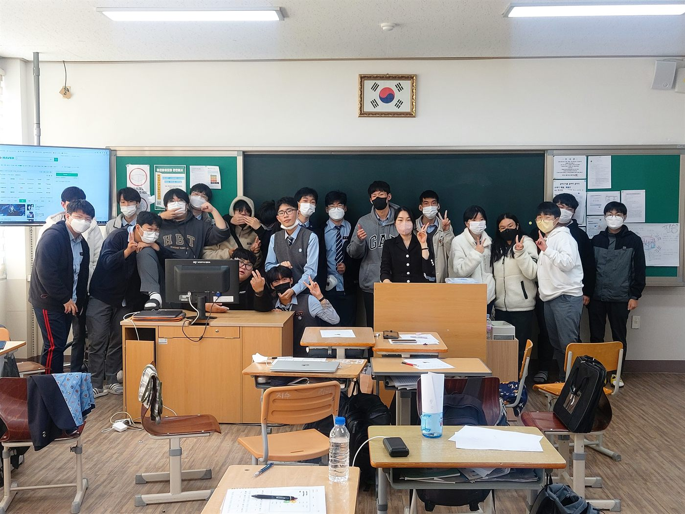
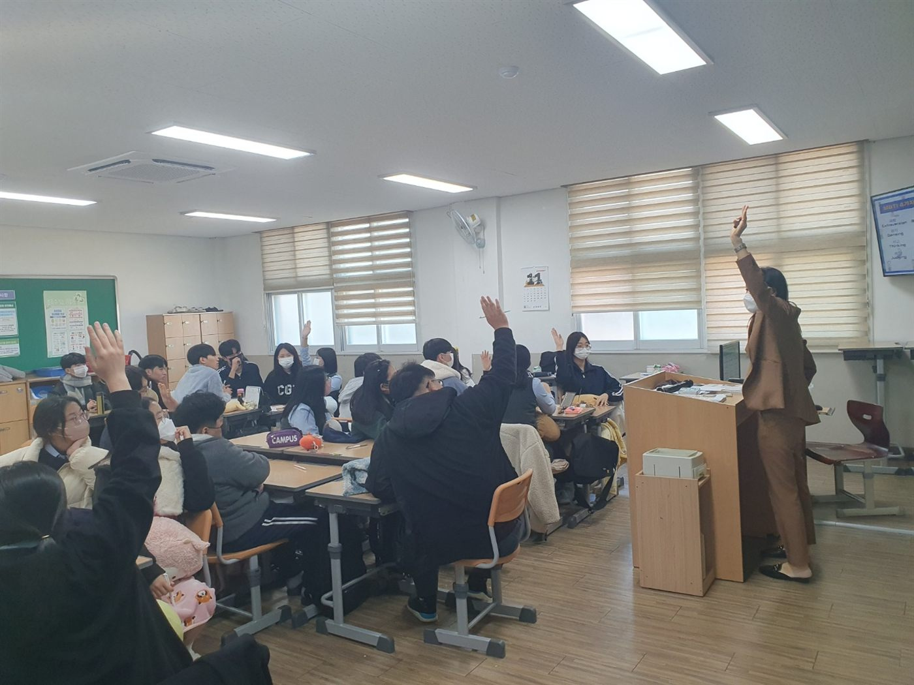
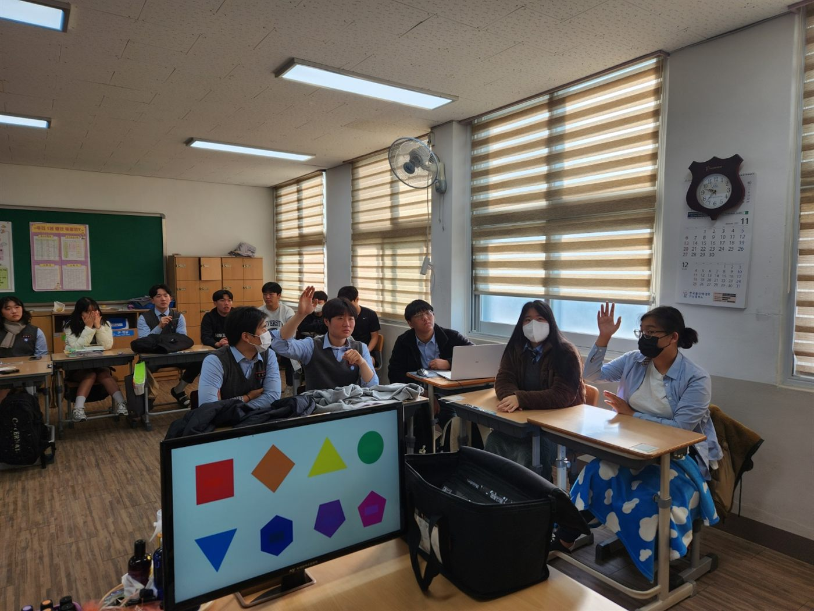
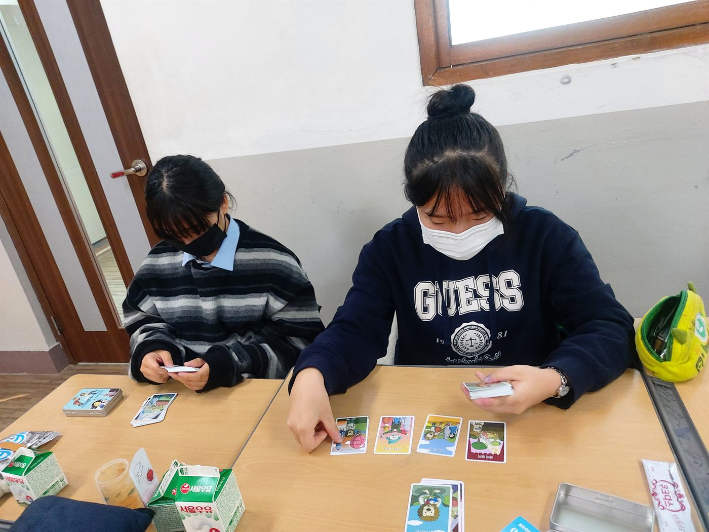
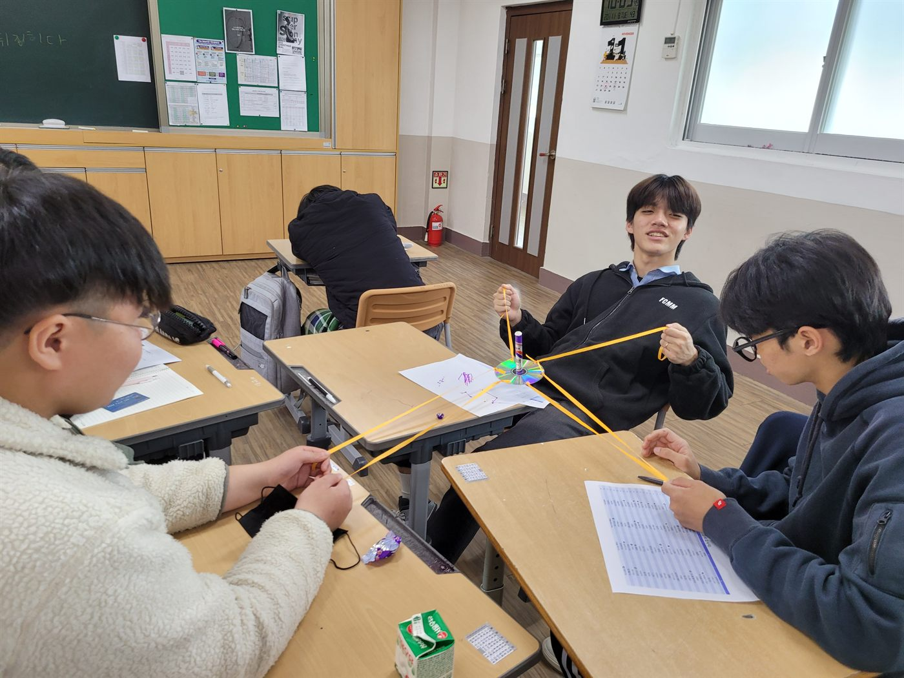
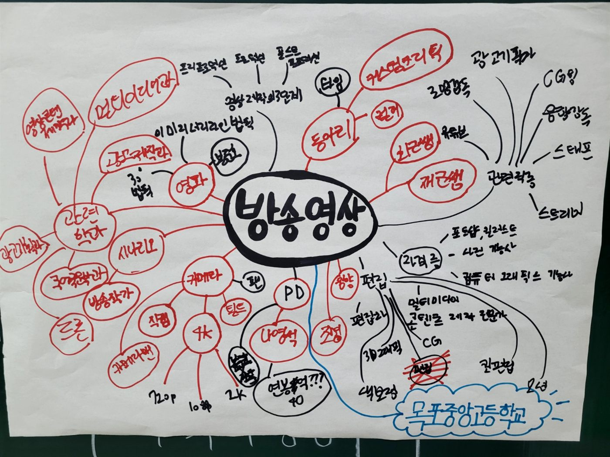
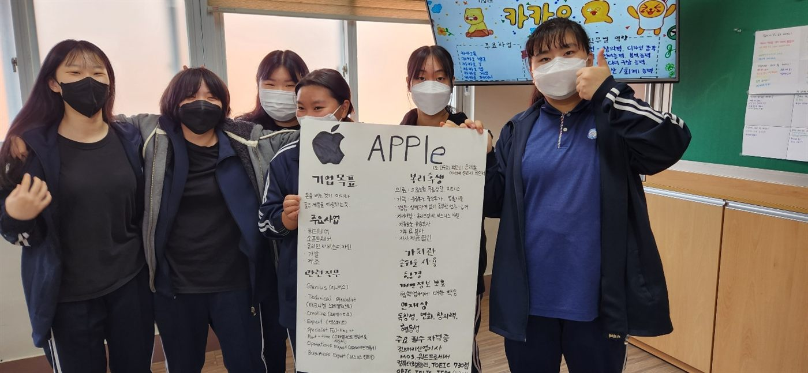
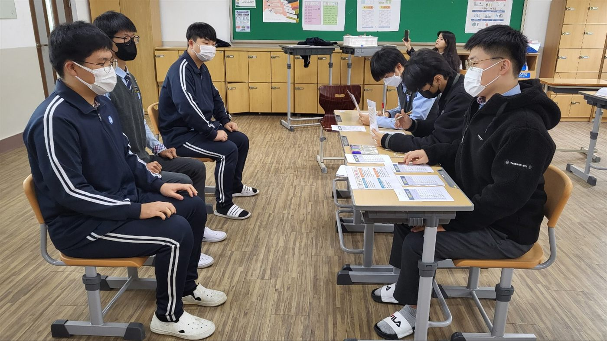
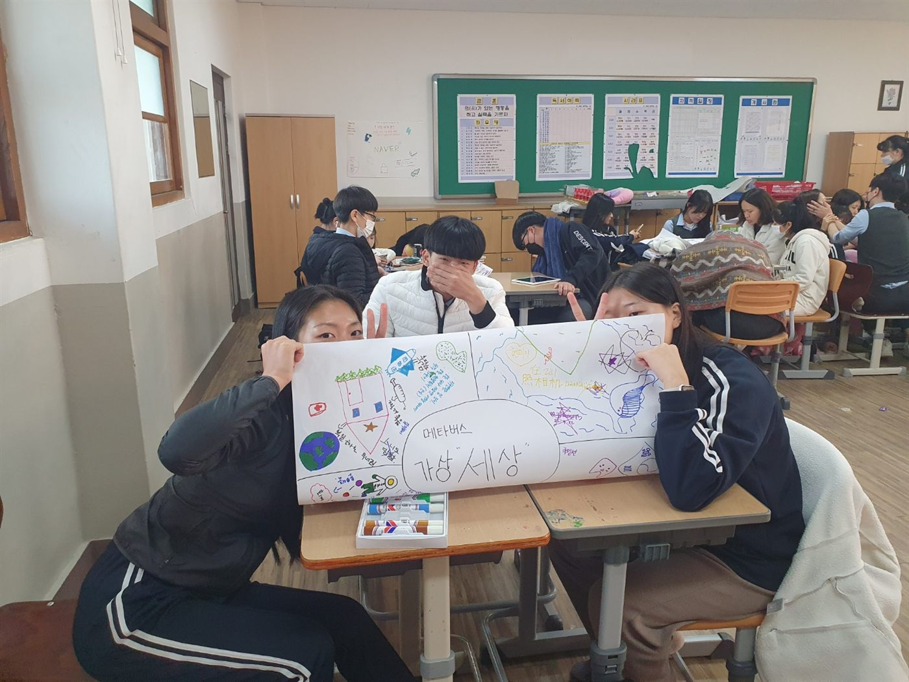
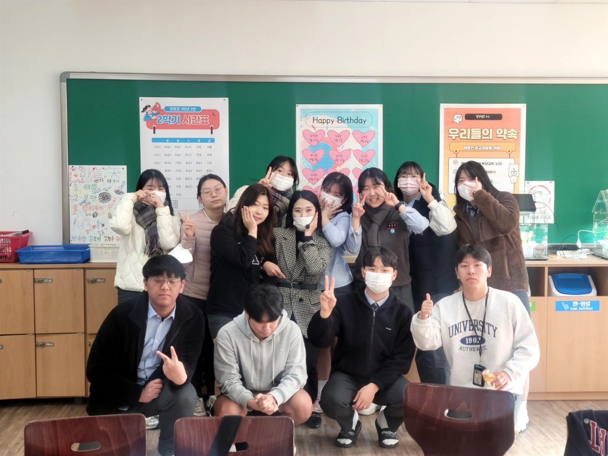

2022년 11월 7일(월)부터 11일(금)까지 5일 동안, 목포중앙고등학교 1·2·3학년 학생들과 「중소기업 이해연수 및 취업역량강화 캠프」를 진행했습니다. 스마트경영과, 스마트설비과, 방송영상과 학년별 6개 반, 모두 18개 반을 강사진이 각 반 교실에서 동시에 맡았습니다.
어떤 과정으로 구성했나요?
학년마다 같은 주제를 반복하지 않도록, 5일 동안 나를 알아가는 수업에서 실제 취업 준비까지 단계를 나눠 시간표를 짰습니다.
- 나를 알기: DISC 성격유형, 적성찾기, 퍼스널 컬러, 향기치유
- 함께 일하는 힘: 감성리더십, 대인관계 함양, 레크리에이션
- 직업과 기업 알기: 기업직무분석, 취업 최근 트렌드, 선취업 후진학, 메타버스(이론 · 실기)
- 취업 실전: 자기소개서(이론 · 실기), 모의면접(이론 · 실기)

나를 알아가는 수업은 어떻게 했나요?
색깔 도형과 카드, 향기 재료처럼 손으로 만지고 고르는 도구를 써서 자신의 성향과 강점을 찾았습니다. 몸을 움직이는 협동 활동으로 반 분위기도 함께 풀었습니다.



기업직무분석에서는 무엇을 했나요?
조별로 관심 있는 기업과 학과 관련 직무를 골라 큰 종이에 정리하고, 앞에 나와 발표했습니다. 방송영상과 학생들은 PD, 촬영, 편집, CG처럼 학과에서 이어지는 직무를 마인드맵으로 펼쳐 보았습니다.


모의면접과 메타버스 수업은 어떻게 진행했나요?
모의면접은 이론 시간에 면접 자세와 질문 유형을 익힌 뒤, 실기 시간에 면접관과 지원자로 나눠 앉아 직접 연습했습니다. 메타버스 수업에서는 아바타와 가상 공간을 알아본 뒤, 조별로 가상 공간에서 하고 싶은 일을 그려 발표했습니다.


학생들의 반응은 어땠나요?
캠프를 마친 뒤 실시한 설문에서 프로그램 일정, 구성 내용, 강의 방법 항목 모두 '만족' 이상 응답이 94~97%로 나타났습니다.

학년과 반 수에 맞춘 진로 · 취업 과정은 취업진로컨설팅 안내에서, 여러 반을 동시에 진행하는 캠프는 캠프 안내에서 보실 수 있습니다.